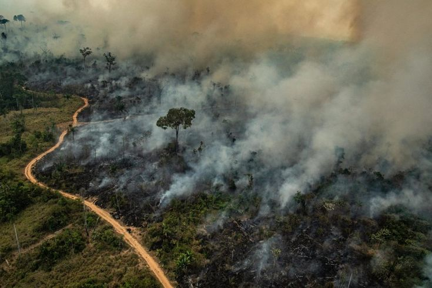

.png)
🌿⚡ POLÍTICAS PUBLICAS | Eco Cidades

Câmara aprova medidas
para facilitar combate a
incêndios florestais
Câmara Aprova Projeto que Agiliza Ajuda em Desastres Climáticos e Combate a Incêndios Florestais
A Câmara dos Deputados aprovou nesta terça-feira (24) o Projeto de Lei 4.802/2023, que simplifica a liberação de recursos federais para ações emergenciais em desastres climáticos, incluindo incêndios florestais. A proposta, que segue agora para o Senado, altera a Lei nº 12.340/2010 para acelerar o repasse de verbas a estados e municípios em situações de calamidade pública.
Principais Mudanças do Projeto
1. Agilização de Recursos para EmergênciasElimina burocracias na liberação de verbas do Orçamento Geral da União para combate a incêndios e outros desastres.
Permite que recursos sejam usados imediatamente após decretos de calamidade pública, sem necessidade de novas autorizações legislativas.
2. Foco em Incêndios Florestais e Desastres ClimáticosPrioriza ações em biomas vulneráveis (Amazônia, Cerrado, Pantanal e Mata Atlântica).
Inclui assistência humanitária a comunidades afetadas, como povos indígenas e agricultores familiares.
3. Transparência na Aplicação dos RecursosExige prestação de contas detalhada em até 90 dias após o uso dos recursos.
Determina publicação em tempo real dos gastos em portais oficiais.
Contexto e Urgência
O relator, deputado Paulo Bengtson (PT-PA), destacou que o projeto é uma resposta aos graves incêndios de 2020 e 2023:
"Em situações extremas, cada minuto conta. Esse texto tira obstáculos para que o socorro chegue rápido às regiões atingidas, salvando vidas e reduzindo danos ambientais".
Próximos Passos
O PL 4.802/2023 será enviado ao Senado Federal para análise.
Se aprovado sem modificações, segue para sanção presidencial.
Acompanhe a tramitação do projeto no Portal da Câmara.
A Câmara dos Deputados aprovou nesta terça-feira (24) o Projeto de Lei 4.802/2023, que simplifica a liberação de recursos federais para ações emergenciais em desastres climáticos, incluindo incêndios florestais. A proposta, que segue agora para o Senado, altera a Lei nº 12.340/2010 para acelerar o repasse de verbas a estados e municípios em situações de calamidade pública.
Principais Mudanças do Projeto
1. Agilização de Recursos para Emergências
2. Foco em Incêndios Florestais e Desastres Climáticos
3. Transparência na Aplicação dos Recursos
Contexto e Urgência
O relator, deputado Paulo Bengtson (PT-PA), destacou que o projeto é uma resposta aos graves incêndios de 2020 e 2023:
"Em situações extremas, cada minuto conta. Esse texto tira obstáculos para que o socorro chegue rápido às regiões atingidas, salvando vidas e reduzindo danos ambientais".
Próximos Passos
O PL 4.802/2023 será enviado ao Senado Federal para análise.
Se aprovado sem modificações, segue para sanção presidencial.
Acompanhe a tramitação do projeto no Portal da Câmara.